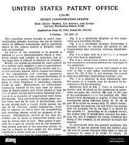

Malgré sa carrière dans le cinéma Hedy avait une passion pour les invention. Elle adorait créer des petites choses et c’est ce talent + ses connaissances en armement qu’elle a acquit lors de sa relation avec Friedrich Mandl. Ils imaginent donc ensemble un piano mécanique qu’elle synchronise avec les fréquences hertziennes qui est basé sur un système d’émetteur et de récepteur. Ils déposent donc le brevet de leur invention en Août 1942 pour permettre aux torpilles de changer de fréquence pour ne pas être détectée par les ennemis. Ils déposèrent donc le brevet de leur invention « étalement de spectre par évasion de fréquence » ou FHSS en anglais.
Mais l’État major ne prend pas au sérieux leur invention. Mais une
version améliorée de leur technologie va être employé lors de la crise cubaine.
L’étalement de spectre par haute fréquence est utilisé encore pour de
nombreuses technologies comme pour le positionnement par satellite, portable
et évidemment le wifi. Donc leurs inventions a été l’un des points créateur du
wifi donc de tous ce qui nous entourent aujourd’hui.